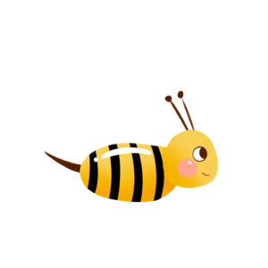

QueenB
Poštujući prirodu i njene zakonitosti, u mogućnosti smo da od nje uzmemo ono
najbolje.
Na taj način, mi ne nudimo kvalitet - mi kvalitet stvaramo, za nas, za vas i za
sve one koji tek dolaze.

Šta je med?
Med je slatka, aromatična, gusta tečnost koju proizvode medonosne pčele iz cvetnog nektara, medne rose sa lišća četinara i listopadnog drveća, slatkih materija koje izlučuju sitni insekti ili od slatkog soka plodova nekih biljaka. Tako dobijen med pčele skladište u saću.
Med i proizvodi od meda od davnina spadaju u najlekovitije proizvode koji se mogu naći u prirodi. Hiljadama se godina koriste u lečenju raznih bolesti, u kozmetici i prirodnoj medicini
Dobrodošli u našu košnicu